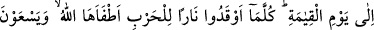
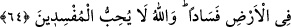

Allah kelimesini yüceltmekten başka bir maksadı olmayan hakikat ehli ve ilmiyle âmil
âlimler, söz ve fiillerinde Allah’ın korumasına mazhardırlar.
Hikâye edilir ki, tâbiînden bir zâhid, Halîfe Mervan b. Hakem’in eğlence âletlerini
kırdı. Yakalanıp halîfenin huzuruna getirildi. Mervan, cezâ olarak onun aslanların önüne
atılmasını emretti. Emir yerine getirildi ve zâhid aslanların önüne bırakıldı. Fakat oraya
girer girmez hemen namaza başladı. Bir aslan geldi ve kuyruğunu sallamaya başladı.
Diğer aslanlar da zahidin çevresine toplandılar ve dilleriyle onu yalamaya başladılar. O
namazına devam ediyor hiç aldırmıyordu.
Sabah olduğunda Mervan zâhidi sordu. Aslanların önüne atıldığı, emrinin yerine
getirildiği söylendi. Adamlarına: “Gidin bakın, onu yemişler mi?” dedi. Gelip baktılar
ki aslanlar zâhidle ünsiyet etmiş, onu parçalamamışlar. Hayret ettiler. Zâhidi oradan
çıkarıp tekrar halîfenin huzûruna getirdiler. Halîfe:
“Aslanlardan korkmadın mı? dedi. Zâhid:
“Hayır, gece boyunca düşünmekle meşguldüm. Aslanlardan korkmaya sıra gelmedi.”
dedi. Halîfe:
“Neyi düşünüyordun?” diye sordu. Zâhid:
“Yanıma gelip beni yalayan bu aslanların salyasının temiz mi, necis mi olduğunu
düşündüm. Bu düşüncem, onların korkusunu aklıma getirmedi.” dedi. Zâhidin bu
hareketleri ve cevâbı halifenin hoşuna gitti ve onu serbest bıraktı. Nisâbu’l-ihtisab’da
böyle geçmektedir.
64. Yahûdîler, Allah’ın eli bağlıdır (sıkıdır), dediler. Dedikleri yüzünden elleri
bağlansın ve onlara lanet olsun! Bilâkis, Allah’ın iki eli de açıktır, dilediği gibi verir.
Andolsun ki Rabbinden sana indirilen, onların çoğunun azgınlığını ve küfrünü
arttırır. Biz onların aralarına kıyâmet gününe kadar (sürecek) düşmanlık ve kin
soktuk. Ne zaman savaş için bir ateş yakmışlarsa Allah onu söndürmüştür. Onlar
yeryüzünde bozgunculuğa koşarlar. Halbuki Allah bozguncuları sevmez.
Müfessirlerin kaydettiğine göre Allah Teâlâ yahûdîlere bol nimetler ihsan etti. Onlar